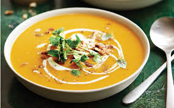

Homepage
Pumpkin Soup

Summary
Ingredients
- 1 onion
- 1.2 kg / 2.4 lb pumpkin. Can use squash
- 2 garlic cloves , peeled whole
- 3 cups vegetable or chicken broth/stock
- Salt and pepper
- 1/2 – 3/4 cup cream
Directions
- Place the pumpkin, onion, garlic, broth and water in a pot.Bring to a boil, uncovered,
then reduce heat and let simmer rapidly until pumpkin is tender
- Remove from heat and blend until smooth. Optional: serve with cream